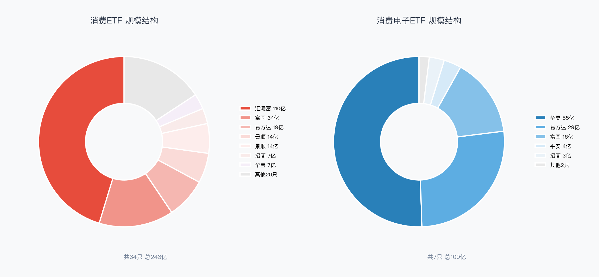
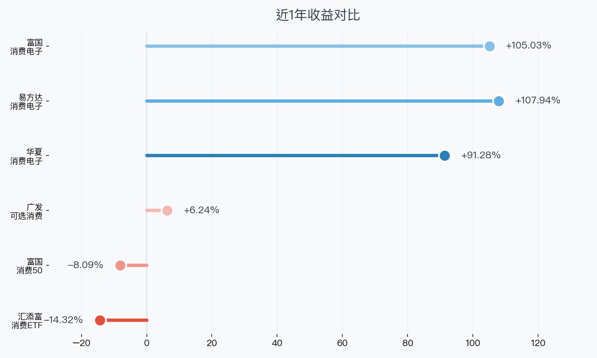
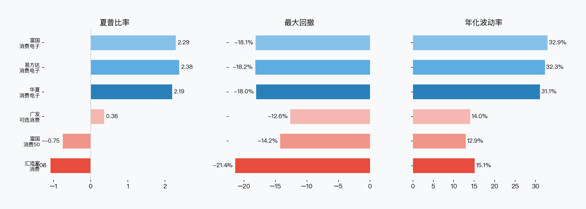
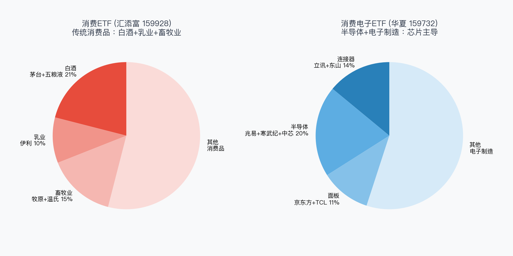
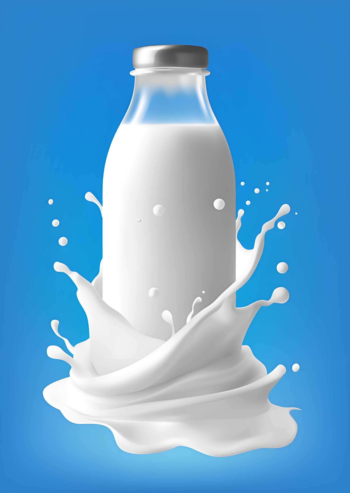
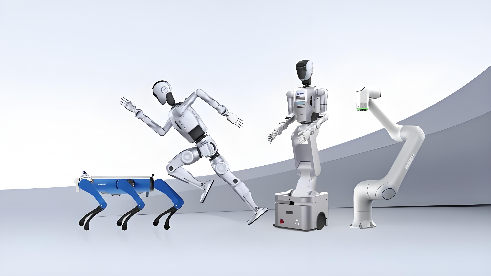
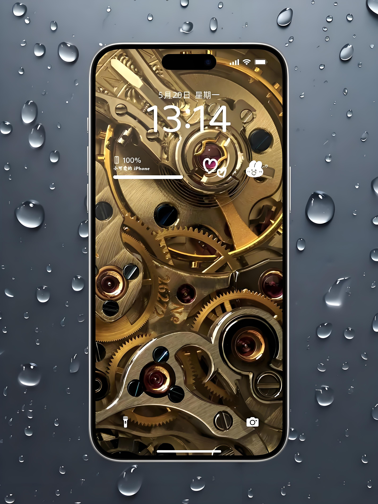

数据区间：2025年6月 — 2026年6月（近1年）
数据来源：FTShare + WeStock
免责声明：本文仅提供数据对比，不构成任何投资建议。投资有风险，决策需谨慎。
打开炒股软件搜"消费"，你会看到一堆名字高度相似的ETF。但消费ETF 和 消费电子ETF 持仓截然不同——前者买白酒畜牧业，后者买芯片面板。名字里多两个字，风险收益差了十万八千里。
首先做一件必要的事：把市场上所有叫"消费"的ETF都拉出来，看看到底有多少只、规模多大、谁在管。
| 代码 | 名称 | 规模 | 管理人 |
|---|---|---|---|
| 159928 | 消费消费ETF | 110.1亿 | 汇添富 |
| 515650 | 消费消费50ETF | 34.3亿 | 富国 |
| 513070 | 消费港股通消费ETF | 18.7亿 | 易方达 |
| 159529 | 消费标普消费ETF | 13.8亿 | 景顺 |
| 513970 | 消费恒生消费ETF | 13.7亿 | 景顺 |
| 510150 | 消费消费ETF | 7.1亿 | 招商 |
| 516130 | 消费消费龙头ETF | 7.1亿 | 华宝 |
| 159936 | 消费可选消费ETF | 4.6亿 | 广发 |
| …… 其余 26 只规模均低于 5 亿 | |||
| 代码 | 名称 | 规模 | 管理人 |
|---|---|---|---|
| 159732 | 消费电子消费电子ETF | 55.1亿 | 华夏 |
| 562950 | 消费电子消费电子ETF | 28.8亿 | 易方达 |
| 561100 | 消费电子消费电子ETF | 16.3亿 | 富国 |
| 561600 | 消费电子消费电子ETF | 3.6亿 | 平安 |
| 159779 | 消费电子消费电子ETF | 3.1亿 | 招商 |
| 159153 | 消费电子消费电子ETF | 1.2亿 | 鹏华 |
| 159178 | 消费电子消费电子ETF | 0.9亿 | 汇添富 |
代表选取规则：每类取规模前3只，且规模≥3亿（确保流动性）。最终选取：消费类取159928（汇添富）、515650（富国）、159936（广发）；消费电子类取159732（华夏）、562950（易方达）、561100（富国）。

消费类ETF市场容量远超消费电子：34只合计约237亿，而消费电子类只有7只约109亿。但个股层面看，消费电子的龙头集中度更高——华夏159732单只就占55亿，而消费类的110亿汇添富仅占34只的46%。
两类ETF的最大单只规模：消费 110亿 vs 消费电子 55亿，消费类翻倍。但从流动性看，消费电子的平均换手率更高（受AI行情驱动），成交活跃度不输消费。

近1年最大的故事：消费ETF全线下跌，消费电子ETF全线暴涨。这不是偶然——两个行业的基本面完全不同。
消费类ETF三只代表：汇添富159928跌14.3%，富国515650跌8.1%，广发159936涨6.2%（可选消费略好于必选消费）。消费降级、白酒去库存、畜牧业价格低迷三重压力叠加，传统消费股持续承压。
消费电子类三只代表：易方达562950涨107.9%、富国561100涨105.0%、华夏159732涨91.3%。受益于AI算力需求爆发、消费电子旺季、半导体国产替代三重共振，芯片+PCB+连接器全线走牛。
注：收益率为价格口径（基于ETF收盘价首尾计算），非复权净值口径。

消费ETF的夏普比率全线为负（-1.08 ~ 0.36）——承担了风险却没换来收益。消费电子ETF的夏普普遍在2.2以上，易方达562950最高达2.38。
但代价也明显：消费电子年化波动率31-33%，是消费类（13-15%）的两倍多。最大回撤倒是相近（-18% vs -21%），说明消费电子虽然震荡大，但每次回调都被强势买回。

消费ETF（159928）的持仓：贵州茅台、五粮液两大白酒合计占21%，伊利股份（乳业）占10%，牧原+温氏（畜牧业）占15%。一句话概括：白酒 + 乳业 + 畜牧业 = 传统消费三件套。这些公司的特征是存量竞争、品牌壁垒、现金流稳定，但缺乏爆发性增长。
消费电子ETF（159732）的持仓：立讯精密（连接器）8%、胜宏科技（PCB）7%、兆易创新（存储芯片）7%、东山精密（FPC）6%、京东方A（面板）6%。天差地别——这里面没有一只消费股，全是电子制造和半导体。消费电子ETF跟踪的是中证消费电子主题指数，成份股其实是"电子产业链"，不是"消费品公司"。



注：如果你以为消费电子ETF买的是苹果、小米、华为相关的消费品牌——那你就完全搞错了。它买的是这些品牌背后的零部件供应商。
| ETF | 管理费 | 托管费 | 总费率 |
|---|---|---|---|
| 159928 消费ETF | 0.50% | 0.10% | 0.60% |
| 515650 消费50ETF | 0.50% | 0.10% | 0.60% |
| 159936 可选消费ETF | 0.50% | 0.10% | 0.60% |
| 159732 消费电子ETF | 0.50% | 0.10% | 0.60% |
| 562950 消费电子ETF | 0.15% | 0.05% | 0.20% |
| 561100 消费电子ETF 富国 | 0.50% | 0.10% | 0.60% |
消费类三只费率一致（0.60%）。消费电子类费率分化明显：易方达562950仅0.20%（最低），华夏159732和富国561100均为0.60%。
| 维度 | 159928 消费ETF 汇添富 | 515650 消费50ETF 富国 | 159936 可选消费ETF 广发 | 159732 消费电子ETF 华夏 | 562950 消费电子ETF 易方达 | 561100 消费电子ETF 富国 |
|---|---|---|---|---|---|---|
| 规模（亿） | 110.1 | 34.3 | 4.6 | 55.1 | 28.8 | 16.3 |
| 费率 | 0.60% | 0.60% | 0.60% | 0.60% | 0.20% | 0.60% |
| 1年收益 | -14.32% | -8.09% | 6.24% | 91.28% | 107.94% | 105.03% |
| 夏普比率 | -1.08 | -0.75 | 0.36 | 2.19 | 2.38 | 2.29 |
| 最大回撤 | -21.35% | -14.22% | -12.63% | -18.03% | -18.19% | -18.12% |
| 年化波动 | 15.1% | 12.9% | 14.0% | 31.1% | 32.3% | 32.9% |
| 持仓风格 | 白酒+乳业 | 白酒+家电 | 家电+汽车 | 连接器+PCB | 半导体+代工 | 半导体+代工 |
| 跟踪指数 | 中证消费 | 消费50 | 可选消费 | 消费电子 | 消费电子 | 消费电子 |
如果你看好消费行业复苏：选159928（汇添富消费ETF，规模最大110亿，流动性最好）。中证消费指数覆盖白酒、乳业、畜牧业等必选消费品，弹性来自茅台和五粮液。等待消费降级趋势反转时发力。
如果你看好AI+芯片行情持续：选562950（易方达消费电子ETF，费率仅0.20%，近1年收益107.9%），费率最优、夏普最高。
关键提醒：消费ETF和消费电子ETF不是同类产品，不应互相替代。根据你对"消费"还是"科技"的判断来选择，两者持仓几乎零重叠。